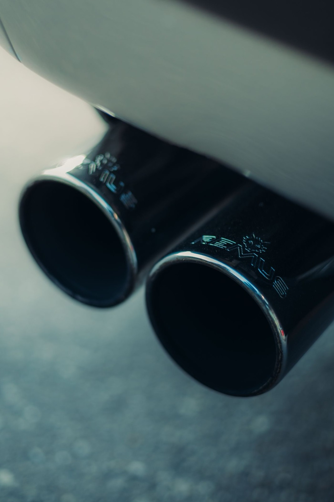
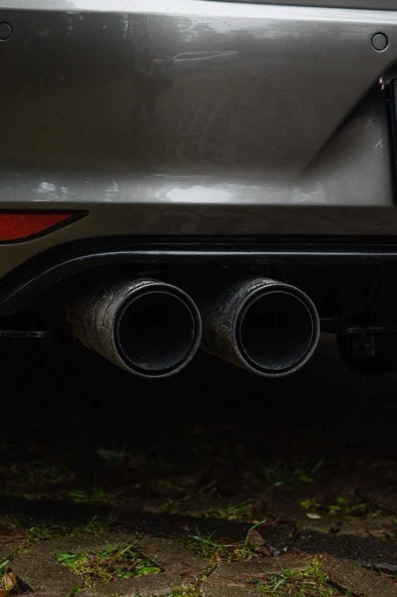
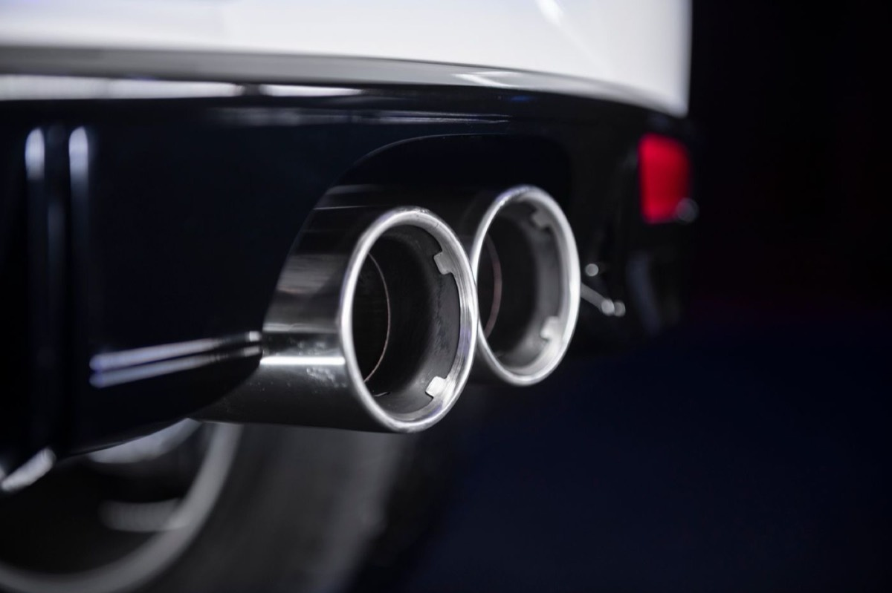
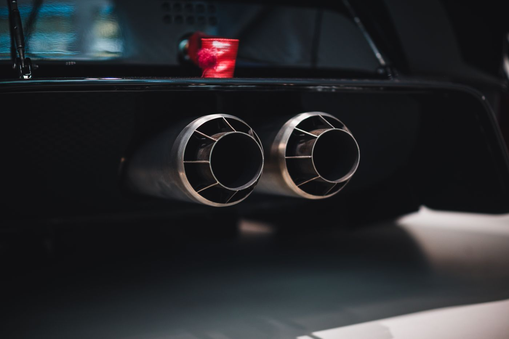
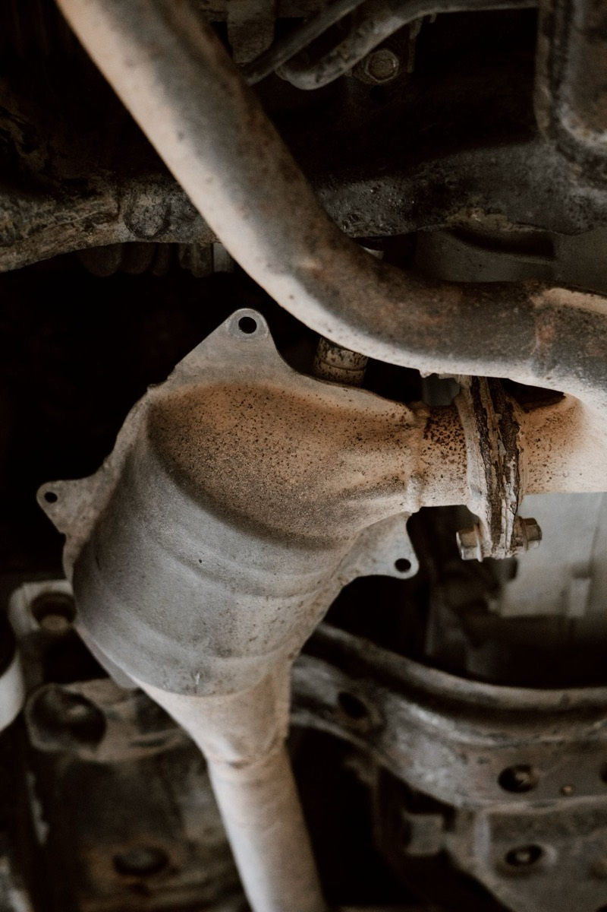
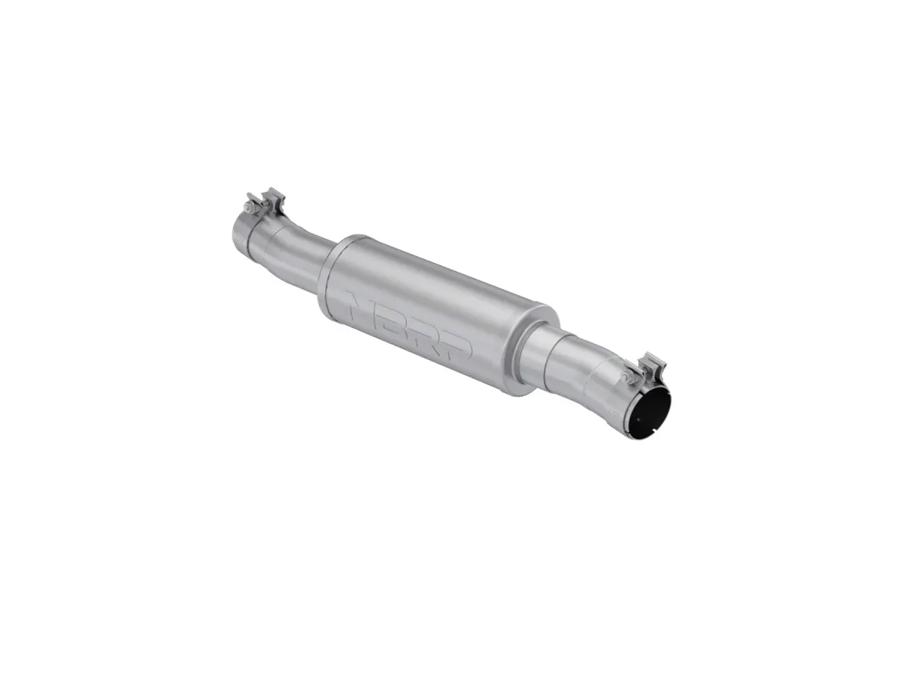
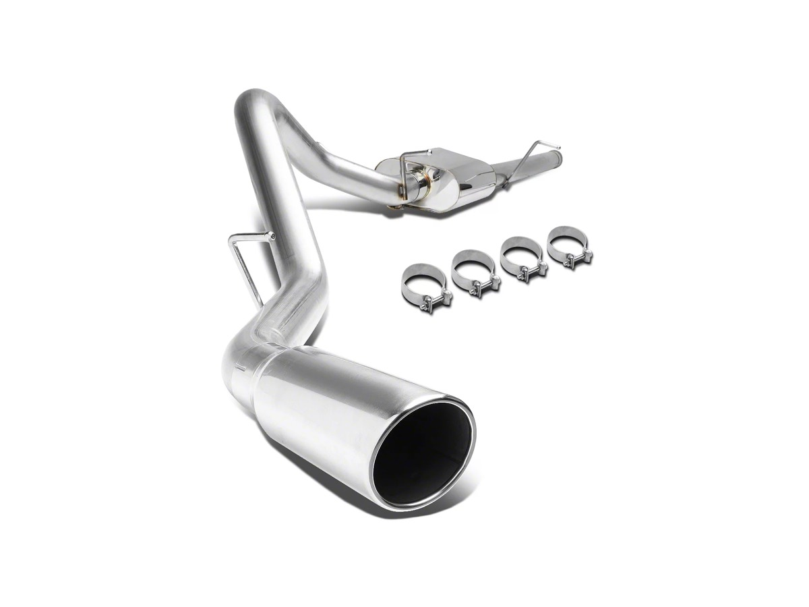

Exhaust Systems Explained: Cat-Back vs Axle-Back, Sound vs Drone, and Legal Reality
An exhaust is the modification people buy for sound and then regret for drone. Understanding what the system actually does, and which part produces which behavior, is what separates a good purchase from an expensive mistake you live with on every highway commute.

An exhaust is the modification people buy for sound and then regret for drone. Understanding what the system actually does, and which part produces which behavior, is what separates a good purchase from an expensive mistake you live with on every highway commute.
What each section does
A modern exhaust has four functional zones, and changing each one produces a different result:
Manifold / header. Collects exhaust from the cylinders. Changing this is the biggest power change available in the exhaust system, and the most invasive and expensive.
Downpipe. Connects the manifold to the catalyst. On turbo cars the downpipe is where most of the restriction lives, and a high-flow one is the largest exhaust-side power gain available on a turbo engine. It is also the most emissions-sensitive part in the system, and the one most likely to fail an inspection.
Catalytic converter. Reduces emissions. High-flow cats exist and are legal in some jurisdictions, not others. “Test pipe” and “catless” replacements are illegal for road use nearly everywhere and will fail inspection. We don’t recommend them for street cars.
Cat-back. Everything from behind the catalyst to the tailpipe: mid-pipe, resonator, muffler, tail sections. Sound and tone are made here. Power gains are usually small, often 5–15 hp on a naturally aspirated engine, and come from removing restriction rather than adding flow capacity.
Axle-back. Just the muffler and tailpipe behind the rear axle. Cheapest way to change sound. Power gain is close to zero. Best option if sound is the only goal and budget is tight.

The drone problem
Drone is a low-frequency resonance that occurs at a specific engine RPM, typically 1,800–2,500 rpm, which is exactly highway cruising speed. It’s not the same as loudness: a system can be loud at wide-open throttle and quiet at cruise, or modest at full throttle and unbearable at 70 mph.
Drone comes from the system’s resonant frequency matching a cabin harmonic. The tools against it, in order of effectiveness:
- Keep a resonator. Removing the resonator is the most common cause of drone. A well-designed system keeps one, or adds a Helmholtz-style chamber to cancel a specific frequency.
- Choose the quieter muffler variant. Nearly every brand sells a “touring” and a “race” version. The touring version is what you want on a daily.
- Keep the system’s diameter appropriate. Oversized pipe (3.5” on a 300 hp engine) reduces exhaust velocity and often increases drone while hurting low-end torque.
- Retain the factory valve system if equipped. Active exhaust valves let you have quiet cruise and loud throttle. Cars that come with them from the factory, many modern performance models, can be programmed rather than replaced.
Test drive before buying if at all possible, and specifically listen at steady 70 mph in top gear. A shop that will let you hear the system on a customer car is worth driving to.

Power numbers, and why there are none here
We won’t quote horsepower figures for exhausts we haven’t dyno-tested. What we can say about the mechanism:
- On a naturally aspirated engine, a cat-back typically yields a modest gain, with most of it at high rpm. You feel it near redline more than in daily driving.
- On a turbo engine, the downpipe is where real gains are; the cat-back behind it usually yields a small additional amount.
- A tune is what unlocks exhaust gains. Adding flow without changing the ECU’s fueling and boost targets leaves most of the benefit unrealized. This is also the point where warranty considerations get serious.
Be skeptical of any “up to +25 hp” claim on a cat-back with no dyno chart attached.

Materials
409 stainless. The most common OEM material. Adequate, will surface-rust, lasts roughly 5–10 years depending on climate and road salt.
304 stainless. Better corrosion resistance, the standard for quality aftermarket systems. Costs more. In salt-belt climates this matters.
Aluminized steel. Cheapest. Will rust through in a few years in wet or salted conditions. Avoid for a car you plan to keep.
Titanium. Light and exotic, used on high-end systems. Expensive, can be brittle, and overkill for street use.
Welds matter as much as material. Look for TIG welds rather than MIG, mandrel bends rather than crush bends, and flanges rather than slip joints where possible.

Sound, Neighbors and the Law
Nearly every US state and most countries regulate exhaust noise and emissions equipment. Practical rules that keep you out of trouble:
- Do not remove the catalytic converter on a road car. It’s a federal offense in the US and fails inspection nearly everywhere.
- Know your local noise limit. Many US states set a limit around 95 dB at a specified distance; some municipalities are stricter. Enforcement is inconsistent but real.
- Cold start is the loudest moment. Many systems are much louder for the first 30 seconds, which is when neighbors notice.
- Check inspection requirements before buying. Some systems alter the position of emissions sensors and will fail a plug-in scan, even if they physically fit.
Picking a System
If sound is your goal and budget is tight: axle-back, touring muffler, keep everything else. If you want a real character change with a small power benefit: cat-back with a resonator, quality 304 stainless. If you’re chasing power on a turbo car, spend on the downpipe plus a tune rather than on a louder cat-back — and understand exactly what that does to your warranty and inspection status before you commit.
Buy for cruise behavior, not for the full-throttle sound clip. You’ll spend 99% of your driving time at part throttle, and that’s the sound you have to live with.
What these cost
Prices and review counts as the listings showed them on 4 November 2026. Watch the year and engine splits — the 4.3L, 5.3L and 6.2L systems differ, and so do the cab and bed configurations.
C&L Single Exhaust System with Polished Tip, Side Exit (14–18 5.3L Silverado 1500)
This is the "character change without the drama" pick from the section above: a full cat-back with a single side exit, in the mid price band, with enough owners behind it that the fitment and drone questions are already answered in public.
A side exit behind the rear wheel is also the practical choice for a truck that tows, because it keeps the tip out of the path of a trailer. It changes the sound at the tailpipe without altering anything forward of the muffler, so your emissions equipment stays exactly where the factory put it.
- Price
- $389.99
- Fitment
- 2014–2018, 5.3L Silverado 1500
- Type
- Cat-back, single side exit
- Owner reviews
- 268
See the C&L cat-back → list price checked 4 Nov 2026

MBRP Armor Plus High Flow Replacement Muffler (14–26 4.3L, 5.3L Silverado 1500)
If the goal is sound and the budget is tight, a replacement muffler is the honest answer — it is not a cat-back, it changes less, and it costs half as much. MBRP's Armor Plus is aluminised steel rather than 304 stainless, which is the reason for the price and also the thing to accept going in: it will not outlast a stainless system in a salt state.
No published review count on this listing, which is the trade-off for the price. Treat it as the low-risk experiment: less money committed, less evidence behind it.
- Price
- $199.99
- Fitment
- 2014–2026, 4.3L and 5.3L Silverado 1500
- Type
- Replacement muffler
- Material
- Aluminised steel
See the MBRP muffler → list price checked 4 Nov 2026

Single Exhaust System with Polished Tip, Side Exit (07–13 5.3L Silverado 1500)
If you have the earlier truck, this is the cheapest complete cat-back in the range we checked, and 70 owners have reviewed it. It costs roughly half the C&L system above and delivers the same category of change.
The fitment is the entire caveat: this is the 2007–2013 body, and it will not fit the newer trucks no matter what the photo implies.
- Price
- $209.99
- Fitment
- 2007–2013, 5.3L Silverado 1500
- Type
- Cat-back, single side exit
- Owner reviews
- 70
See the side-exit system → list price checked 4 Nov 2026
We did not measure sound levels on any of these, and none of the listings publishes a dB figure. We have therefore printed no decibel claim, which means the "is it too loud for my neighborhood" question stays unanswered here rather than answered with a number we invented.
Material and construction are as the listings state them. Where a listing gives no review count, we say so rather than omitting the line silently.